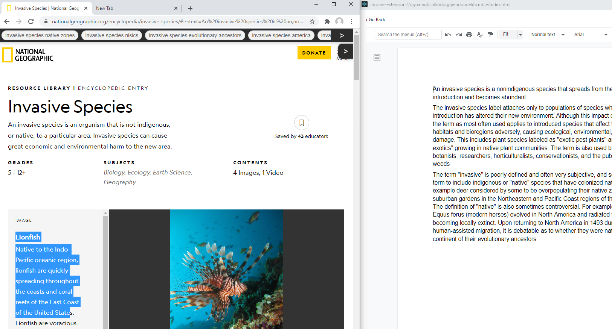
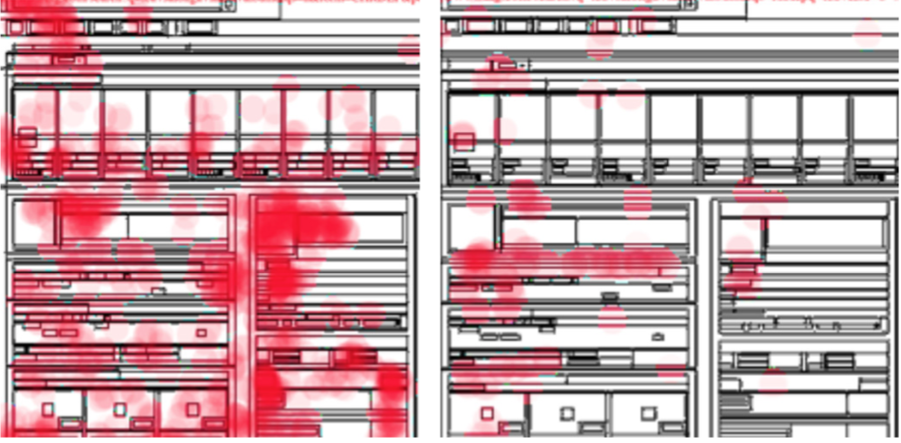

Integrating Note-taking and Web Search
Srishti Palani, Zijian Ding, Austin Nguyen, Andrew Chuang, Stephen MacNeil, Steven Dow
Paper Code Video
Srishti Palani, Zijian Ding, Austin Nguyen, Andrew Chuang, Stephen MacNeil, Steven Dow
Paper Code Video
Understanding How Web Search Strategies Relate to Creative Learning Outcomes
Srishti Palani, Zijian Ding, Stephen MacNeil, Steven Dow
Paper
Srishti Palani, Zijian Ding, Stephen MacNeil, Steven Dow
Paper

An Eyetracking Study of Web Search by People With and Without Dyslexia
Srishti Palani, Adam Fourney, Shane Williams, Kevin Larson, Irina Spiridonova, Meredith Ringel Morris
ACM SIGIR Conference on Research and Development in Information Retrieval (SIGIR 2020) 2020
PDF Talk
Srishti Palani, Adam Fourney, Shane Williams, Kevin Larson, Irina Spiridonova, Meredith Ringel Morris
ACM SIGIR Conference on Research and Development in Information Retrieval (SIGIR 2020) 2020
PDF Talk